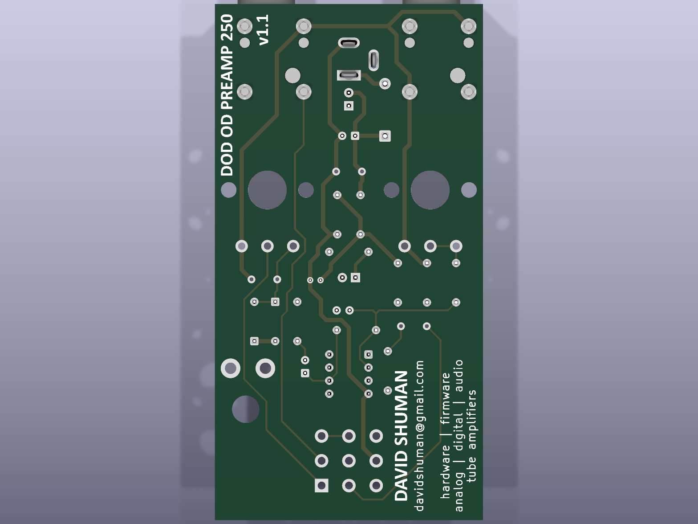
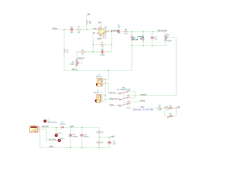

Overview
This board is a clone of the classic DOD 250 Overdrive Preamp: a single TL071 op-amp in a non-inverting gain stage, hard-clipped by a pair of back-to-back 1N4148 diodes, with GAIN (500 kΩ audio, RV1) and LEVEL (100 kΩ audio, RV2) controls. All switching is true-bypass via a board-mounted 3PDT footswitch. Power is 9 V from a 2.1 mm barrel jack (center-positive as shipped — see the center-negative conversion) or a 9 V battery wired to the BATT+ / BATT− pads. Idle current draw is roughly 2–3 mA, plus about 15 mA per status LED when lit.
You are reading the guide for PCB v1.1 — the revision with
v1.1 and a QR code on the front silkscreen. If your board has
neither marking, you have a v1.0 board — use that guide
instead; it needs additional corrections to the power circuit.
Downloads
- Schematic (PDF)
- Bill of materials (CSV)
- Gerber fabrication files (ZIP)
- KiCad project source (GitHub)
Required correction — ground bond
On this revision the audio ground net (jack sleeves, pot lug 3, the clipping diodes, R1) and the power ground net (op-amp pin 4, the supply filter caps, the DC-jack sleeve) are routed as two separate nets that are never joined anywhere on the board. Without a bond between them there is no signal return path: the pedal will not pass audio.
Fix (one wire): on the back of the board, solder a short jumper (~12 mm) from the left-hand pad of C7 (the 1 nF film cap beside the LEVEL pot — use the pad nearer C3) to the negative pad of C3 (the 10 µF electrolytic; its negative pad is the one the stripe on the can points to). Any audio-ground point to any power-ground point works; this pair is the shortest hop that stays clear of the DC-jack area, so it remains correct even if you later do the center-negative conversion.
Bill of materials
| Ref | Value | Description | Part no. | Source |
|---|---|---|---|---|
| R1, R7 | 1 M | Carbon film, 1/4 W 5%, axial DIN0207 | YAGEO CFR-25JB-52-1M | Mouser |
| R2, R3 | 22 k | Carbon film, 1/4 W 5%, axial DIN0207 | YAGEO CFR-25JB-52-22K | Mouser |
| R4, R6, R8 | 10 k | Carbon film, 1/4 W 5%, axial DIN0207 | YAGEO CFR-25JB-52-10K | Mouser |
| R5 | 4.7 k | Carbon film, 1/4 W 5%, axial DIN0207 | YAGEO CFR-25JB-52-4K7 | Mouser |
| R9 | 470 R | Carbon film, 1/4 W 5%, axial DIN0207 (LED series resistor) | YAGEO CFR-25JB-52-470R | Mouser |
| C1 | 100 µF | Aluminum electrolytic, 25 V, radial D6.3 mm, 2.5 mm pitch | Panasonic ECA-1EM101 | Mouser |
| C2 | 100 nF | Film, box, 5.0 mm pitch | KEMET PHE450KB6100JR05L2 | Mouser |
| C3 | 10 µF | Aluminum electrolytic, 25 V, radial D5.0 mm, 2.0 mm pitch | Panasonic ECA-1EM100 | Mouser |
| C4 | 10 nF | Film, box, 5.0 mm pitch | KEMET PHE450KB4100JR05L2 | Mouser |
| C5 | 120 pF | Ceramic disc, C0G, 200 V, 2.5 mm pitch | KEMET C315C121J2G5TA | Mouser |
| C6 | 4.7 µF | Aluminum electrolytic, 50 V, radial D5.0 mm, 2.5 mm pitch | Panasonic ECA-1HM4R7 | Mouser |
| C7 | 1 nF | Film, box, 5.0 mm pitch | KEMET PHE450KB4010JR05L2 | Mouser |
| D1 | 1N4001 | Rectifier, DO-41 (reverse-polarity protection) | any manufacturer | Mouser |
| D2, D3 | 1N4148 | Signal diode, DO-35 (clipping pair) | any manufacturer | Mouser |
| D4, D5 | LED | 3 mm red diffused (two alternative positions — populate either or both) | Kingbright WP710A10LSRD | Mouser |
| U1 | TL071 | JFET-input op-amp, single, DIP-8 | TI TL071CP | Mouser |
| XU1 | — | IC socket, DIP-8 (for U1) | Amphenol DILB8P-223TLF | Mouser |
| J2, J3 | — | 6.35 mm mono switched jack, horizontal PCB | Neutrik NRJ4HF | Mouser |
| J1 | — | 2.1 mm barrel jack with switch, horizontal PCB | GCT DCJ200-10-A | Mouser |
| RV1 | A500K | GAIN — 500 k audio, Alpha 16 mm PCB-mount, D-shaft | Tayda A-3229 | Tayda / Arcadia |
| RV2 | A100K | LEVEL — 100 k audio, Alpha 16 mm PCB-mount, D-shaft | Tayda A-3227 | Tayda |
| SW1 | 3PDT | Latching footswitch, PCB-pin, 9-pin (see below) | Taiwan Alpha SF17010F-0302-21R-L = StompBox Parts FSW-800-1028; budget: Tayda A-1842, Love My Switches 3PDT-PCB | specialty suppliers |
The pedal-style 3PDT stomp switch is not stocked by Mouser or the other big catalog distributors; order it from a guitar-pedal specialty supplier (StompBox Parts, Love My Switches, Tayda). Everything else is a Mouser line item — the BOM CSV above has exact part numbers. A DPDT footswitch can substitute with limitations: see DPDT option.
Board layout



The power circuit
The DC input chain is: barrel-jack center pin (J1 pin 1) → raw 9 V net → series diode D1 (1N4001) → protected 9 V rail. Everything that consumes power — U1 pin 7, the status LEDs, the supply filters C1/C2, and the Vref divider R2/R3/C3 — sits downstream of D1. Plug in a reversed supply (or a backwards battery) and D1 simply blocks: no damage, no sound, costing you only ~0.7 V of headroom in normal operation.
Battery switching
The barrel jack has an internal normally-closed switch between its sleeve contact (pin 2, ground) and its switch pin (pin 3). The battery positive lead (BATT+ pad) ties to the raw 9 V net; the battery negative lead (BATT− pad) goes to jack pin 3. With no plug inserted the sleeve leaf rests on pin 3, grounding the battery negative — the battery powers the pedal. Inserting a DC plug lifts the leaf and disconnects the battery.
Unlike pedals that switch the battery through the input-jack ring, this board keeps the battery connected whenever no DC plug is inserted — regardless of whether a guitar cable is plugged in. (The input jack’s switched contact is used to ground the input against pops instead.) For storage, unsnap the battery or leave a dummy DC plug inserted.
Wiring the 3PDT footswitch
The board is laid out for a PCB-pin 3PDT latching stomp switch on the standard Taiwan-Alpha 9-pin grid: three columns 5.3 mm either side of center, three rows on 4.8 mm pitch, 1.5 mm holes. If you bought one of the parts listed in the BOM, there is no “wiring” — drop it into the SW1 footprint and solder all nine pins. The switch is symmetric: either rotation that fits the grid works, because each pole’s common is the center pin of its column.
Looking at the front of the board, switch at the bottom, jacks away from you, the SW1 pads carry these signals:
How it works: each press of the latching switch connects the middle-row commons to one outer row or the other.
- Engaged: commons connect to the bottom row — input-jack tip feeds the circuit input (5→4), the LEVEL pot wiper feeds the output jack (2→1), and the LED cathode path is grounded through R9 (8→7), lighting the status LED.
- Bypassed: commons connect to the top row — pads 6 and 3 are bridged by a trace on the board, so the input-jack tip is wired straight to the output-jack tip (5→6→3→2). The LED pole lands on pad 9, which is unconnected, so the LED goes dark. The signal never touches the circuit: true bypass.
Using a solder-lug 3PDT off-board
If your switch has solder lugs instead of PCB pins (or you want the switch mounted to the enclosure away from the board), wire each lug to its corresponding SW1 pad with hookup wire, matching the 3×3 grid above — lug 5 (center of the middle column) to pad 5, and so on. Eight wires are enough: pad 9 connects to nothing, so its lug can be skipped. Keep the two signal-pole wire runs (pads 1–6) short and away from the power wiring to avoid bypass-mode crosstalk.
Substituting a DPDT footswitch
A DPDT latching footswitch (e.g. Tayda A-361) can replace the 3PDT, but it has only two poles — both are consumed by the input and output signal switching, leaving nothing to switch the status LED.
- Fit the two DPDT columns into the middle and right columns of the SW1 footprint (pads 1–6). The row pitch (4.8 mm) matches the standard pedal DPDT; verify the column spacing of your particular switch against the 5.3 mm grid before ordering, and dress the pins to fit if slightly off.
- The left column (pads 7/8/9 — the LED pole) stays empty. True bypass works exactly as with the 3PDT: the on-board 3–6 bridge still carries the bypassed signal.
- For the status LED, choose one:
- Omit it — leave D4/D5 and R9 unpopulated; or
- Always-on power indicator — solder a wire jumper across pads 7 and 8 of the empty LED column. That permanently grounds the LED’s return through R9, so the LED lights whenever the pedal has power, regardless of bypass state.
Converting the DC jack to center-negative
Why you might want this
As shipped, the board expects a center-positive 9 V supply — the vintage MXR/DOD-era convention. Virtually every modern pedal supply, one-spot, and pedalboard daisy chain is center-negative (the Boss convention). Converting the jack lets the pedal share a standard pedalboard supply without a special cable. If you’d rather not modify the board, a polarity-reversing adapter cable accomplishes the same thing — and thanks to D1, plugging a center-negative supply into the unmodified v1.1 board causes no damage; the pedal just stays silent until correct power arrives.
What does not change
The conversion below swaps which jack terminal feeds which net, upstream of D1. The board’s internal rail remains +9 V either way, so D1 (band toward C1), the electrolytics C1/C3/C6, and the LEDs are all installed exactly per the silkscreen. Do not attempt the conversion by reversing D1 and the electrolytics instead — U1’s supply pins, the LEDs, and the battery pads are hard-wired to the board nets, and flipping the rail would put the TL071’s V+ pin below its V− pin. The swap must happen at the jack.
The procedure
Four trace cuts, four jumpers. Make the cuts before soldering J1 — two of them are easier to reach with the jack off the board. Confirm every cut with a continuity meter.
Cuts — each trace is cut where it leaves the J1 pad:
- Back side: the short trace running left from J1 pin 1 (center pin, the middle pad) to the top pad of D1.
- Front side: the trace leaving J1 pin 1 to the right, running down the right side of the board to the BATT+ pad.
- Back side: the trace running right from J1 pin 2 (sleeve, the pad nearest the board edge) down to the negative pad of C1.
- Front side: the trace running right from J1 pin 3 (the offset switch pad) along the top of the board and down the right edge to the BATT− pad.
Jumpers (insulated wire on the back of the board):
- J1 pin 2 (sleeve — now the +9 V input) → top pad of D1 (anode).
- J1 pin 1 (center — now ground) → negative pad of C1 (or any power-ground point).
- BATT+ pad → J1 pin 3. The battery positive now goes through the jack’s switch: with no plug inserted, pin 3 rests against the sleeve contact and the battery feeds D1; inserting a plug disconnects it — same behavior as stock, on the other supply leg.
- BATT− pad → any power-ground point (U1 pin 4 or the negative pad of C1).
If you will never fit a battery, cuts 2 and 4 and jumpers 3 and 4 can be skipped — but then leave the battery pads permanently unused: with the jack swapped, a battery wired to the stock pads would see reversed polarity.
Note for the ground-bond erratum: bond at C7/C3 as instructed above, not at J1 pin 2 — after this conversion pin 2 is no longer ground.
Assembly notes
- Decide on jack polarity first. If converting to center-negative, make the four trace cuts before any parts go in.
- Populate by height: diodes and resistors first (note D1 band toward C1; D2/D3 bands opposed, per silkscreen), then the IC socket (notch matches silkscreen), film and ceramic caps, electrolytics (stripe = negative), LEDs (flat = cathode), jacks, pots, and the footswitch last.
- D4 and D5 are two alternative positions for the same status LED, wired in parallel and sharing R9 — populate whichever suits your enclosure (or both; each adds ~15 mA when lit). Stand the LED off the board on long leads if it must reach a hole in the enclosure top.
- Add the ground-bond jumper — the pedal will not pass audio without it.
- Battery (optional): solder a 9 V snap’s red lead to BATT+ and black lead to BATT−.
- Insert the TL071 in its socket, apply 9 V, and verify roughly +4.2 V at U1 pins 3 and 6 (Vref bias) before connecting a guitar.